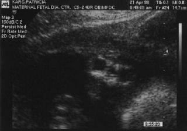

![[Animated
Angel]](images/anss.gif)
Mary Elisabeth Karg
September 3, 1998 - September 4, 1998
Wir waren sehr aufgeregt, als wir herausfanden, dass Patricia wieder schwanger war - wir hatten eine Fehlgeburt bei einer vorhergehenden Schwangerschaft. Wir waren auch mitten in der Erziehung Joshuas, ein willenstarker Zweijähriger. Seit Joshua durch einen Kaiserschnitt in der 37. Woche geboren wurde (wegen Patricias Blutvergiftung), und auch seit der Fehlgeburt, wurde Patricia sehr genau von ihre Aerztin betreut. Sehr früh schon hatten wir die Namen unseres Babys ausgesucht : Christopher Thomas oder Mary Elisabeth.
![[UltraSound at 12 Weeks]](images/baby1.jpg)
Der Geburtstermin war der 9. September 1998. Etwa in der 18. Schwangerschaftswoche führte die Aerztin einen AFP-Test durch, dessen Resultat abnormal war. Die Aerztin erklärte uns, es könne zwei Gründe dafür geben. Entweder wäre der Geburtstermin falsch ausgerechnet, oder das Baby könne einen Neuralrohrdefekt haben. Sie verordnete einen Ultraschalluntersuch, um den Geburtstermin zu überprüfen.
Dieser Untersuch wurde am 15. April 1998 durchgeführt. Ich ging mit Patricia und Joshua hin, wir freuten uns, unser Baby schon so früh zu sehen. Patricia wollte das Geschlecht wissen, ich nicht. Wir waren auf keinen Fall darauf vorbereitet, dass der Arzt uns sagen würde, unser Baby hätte Anenzephalie. Es war ein Riesenschock.
Wir fragten den Arzt, was jetzt zu tun sei. Er meinte, die meisten Leute würden die Schwangerschaft abbrechen, da sie das Baby für nicht lebensfähig hielten. Doch wir wussten, dass in Patricias Bauch Leben war, und wussten, dass wir ihm alle Chancen geben wollten. Als wir dies mit unserer Frauenärztin besprochen hatten, war sie mit uns einverstanden, und ordnete einen zweiten Ultraschall an.
Vor dem zweiten Ultraschall fingen wir an Informationen über Anenzephalie und Neuralrohrdefekte zu sammeln, und beteten, dass die Diagnose des ersten Untersuch falsch sei. Das Internet erwies sich als ein sehr wichtiges Hilfsmittel für unsere Suche. Als es Zeit für den zweiten Untersuch war, waren wir gut über das Thema informiert. Leider zeigte sich nichts Neues bei diesem Untersuch - das Gehirn des Babys war nicht ausgebildet. Wir beteten immer noch für ein Wunder. Der Ultraschall brachte an den Tag, dass das Baby ein Mädchen war. Jetzt konnten wir für Mary Elisabetz beten.
Nach dem zweiten Ultraschall informierte uns die Aerztin über unsere Möglichkeiten. Wir sagten ihr, wir wollten bis zum Geburtstermin durchhalten. Die Aerztin sagte uns, sie würde diese Schwangerschaft wie jede andere behandeln. Sie würde uns die gleiche Pflege geben, damit wir uns nicht anders vorkommen würden.
Wir haben viele Nächte und Wochenenden mit der Suche nach Selbsthilfegruppen und der Suche nach Informationen über Anenzephalie verbracht. Uebers Internet fand Patricia verschiedene Leute, die ein anenzephales Kind gehabt hatten, und begann mit ihnen zu korrespondieren. Die Homepage, die ihr am meisten geholfen hat, war jene der « Anencephalic Support Foundation » (asfhelp), die Informationen, Erlebnisberichte und medizinische Artikel über den Neuralrohrdefekt Anenzephalie enthält. Sie half uns bei der Vorbereitung auf Mary Elisabeths Geburt.
Wir packten unseren Koffer mit einem Fotoapparat, Resevefilm, Videokamera, Reservekassetten, einem Modellierset für Handabdrücke, einigen Babykleidern, einer Puppe, einem Babybuch und unserer Bibel. Patricia packte ausserdem noch einen Koffer für sich. Vor Beginn der Geburtsarbeit, fühlte sich Patricia zweimal sehr schlecht, und der Frauenarzt schickte uns vorsorglich zur Kontrolle in die Notfallstation. So konnten wir uns mit den Räumlichkeiten vertraut machen. Drei Wochen vor Geburtstermin - nach dem zweiten Besuch der Notfallstation - wurde Patricia strenge Bettruhe verschrieben. Ihre Mutter kam aus Alabama um uns im Haushalt an die Hand zu gehen.
Die nächste Kontrolle war zwei Wochen vor dem Termin, es wurde ein Ultraschall durchgeführt. Dabei kam heraus, dass das Baby in Steisslage lag. Der Arzt verordnete einen Kaiserschnitt für die folgende Woche, eine Woche vor dem Termin. Ein weiterer Ultraschall zwei Tage vor dem Kaiserschnitt zeigte, dass sich nichts an der Lage geändert hatte. Am 3. September 1998 traten wir ins Krankenhaus ein, bereit für den Kaiserschnitt.
Mary Elisabeth kam um 9.49 h zur Welt und kämpfte um zu atmen. Als sie im Brutkasten lag, die Aerzte rund um sie herum, schrie sie auf und begann zu atmen. Da der Neonatologe dachte, sie würde nicht lange leben, nahm ich sie und trug sie zu Patricia. Ihre Operation war noch nicht beendet, doch sie konnte Mary Elisabeth nahe bei ihrem Gesicht halten. G.K. Abner, der Pfarrer der Kirche von Patricias Mutter, segnete uns alle zusammen, dann musste Mary Elisabeth auf eine spezielle Säuglingsstation. Wir machten Fotos und dann begannen sie, sie zu waschen. Die Krankenschwester sagte mir, ich könne in einer halben Stunde wieder kommen, dann seien sie fertig.
![[Dad and Mary - newborn]](images/mary1.jpg)
Ich ging zurück in den Wartsaal, wo Joshua, Patricias Familie, G.K. Abner und Fr. Gordy auf mich warteten. Ich begann Joshua von seiner Schwester zu erzählen, doch ich brach in Tränen aus. Ich zeigte ihm das Polaroidfoto von ihr, erklärte ihm, dass ihr Kopf « gebrochen » war. Es war sehr schwierig. Dann ging ich zurück zu Patricia, die noch immer im Operationssaal lag. Ich trat ein und erzählte ihr, wie die Dinge lagen und half, sie in den Erholungsraum zu bringen. Dann rief ich meine Eltern an, und erzählte ihnen von dem Baby.
Während wir im Erholungsraum warteten, brachte eine Säuglingsschwester Mary Elisabeth zu uns. Sie hatte einen wunderschönen blauen Anzug an und einen Verband um den Kopf. Patricia hielt sie in ihren Armen, und Fr. Gordy taufte sie in einer anrührenden Zeremonie. Wir machten ein Familienfoto. Nachdem ich unsere Sachen geholt hatte, verbrachte ich den Rest des Tages auf der Säuglingsstation mit Mary Elisabeth. Patricia kam zu uns sobald sie aus dem Erholungsraum entlassen wurde.
![[Dad, Mom, and Mary, after her Baptism]](images/mary2.jpg)
Mary Elisabeth war normal ausser ihrem Oberkopf. Sie hatte sogar Haare im Nacken ! Sie war sehr aktiv, hielt unsere Finger sofort fest. Sie wurde gerne getragen und öffnete nur eines ihrer Augen. Bei lauten Geräuschen reagierte sie, und saugte wenn sie Hunger hatte. Die Krankenschwester hatte ihr eine Magensonde angelegt, so wurde sie in regelmässigen Abständen gefüttert. Wir hatten eine Erklärung unterschrieben, dass sie nicht reanimiert werden sollte, doch aber für ihr Wohlergehen gesorgt werde.
Später an diesem Tag kam Joshua sie besuchen, um ihr ein Lied vorzusingen. Er brachte ihr auch eine Puppe, die in ihr Bettchen kam.
Um halb sieben war Schichtwechsel. Ich legte Mary Elisabetz in ihr Bettchen zurück, auf den Rat der Krankenschwester auf den Bauch. Sie begann sofort sehr laut zu schnarchen. Zuerst war ich beunruhigt, doch dann realisierte ich, dass sie nur nach mir verlangte.
![[Dad, Mom, Joshua and Mary, after her Baptism]](images/mary3.jpg)
Dann legeten wir eine Pause ein, um etwas zu schlafen. Um 1 Uhr Morgens rief man uns, da Ihre Lebenszeichen abnahemen. Nachdem wir sie in unsere Arme genommen hatten, wurde alles wieder normal. So blieben wir noch einige Stunden, bevor wir wieder etwas schlafen gingen. Vor dem Schichtwechsel um halb sieben ging ich zu ihr zurück, ich ass das Frühstück während des Schichtwechsels. Patricia und ich verbrachten den ganzen Morgen mit ihr. Wir mussten feststellen, dass sie nicht mehr so gut reagierte, wie am ersten Tag. Um dreizehn Uhr wurde sie so schwach, dass wir uns in einen privaten Raum zurückzogen, nahe des Säuglingszimmers.
Die nächsten sechs Stunden sahen wir zu, wie sie um ihr Leben kämpfte. Sie hörte auf zu atmen, um wenig später wieder zu beginnen. Das machte sie fünfmal und jedesmal wurde sie schwächer. Um ca. 19.30 Uhr hörte sie auf zu atmen, und starb in Patricias Armen. Während dieser Zeit waren der Krankenhausseelsorger, ein Pfarrer sowohl ein Diakon unserer Gemeinde an unserer Seite.
Diakon Jack blieb mit uns nachdem sie gestorben war. Wir badeten sie und kleideten sie an, während dem wir auf den Bestatter warteten. Um etwa 22 Uhr sagten wir auf Wiedersehen und gingen in unser Zimmer zurück. Der nächste Tag verbrachten wir mit den Vorbereitungen der Beerdigung. Wir unterrichteten nun auch jene Freunde und Verwandte, denen wir in der vergangenen Nacht noch nicht telefoniert hatten. Patricia wurde am Samstag aus dem Krankenhaus entlassen und wir gingen nach Hause. Meine Eltern waren angekommen, nachdem sie die ganze Nacht hindurch gereist waren, und waren sehr traurig über die Neuigkeiten.
Am Sonntag Morgen habe ich in der 8 Uhr Messe Gitarre gespielt und gesungen. Es war sehr schwierig, doch irgendwie schaffte ich es durch die Musik hindurchzuhalten. Freunde brachten uns das Essen für den ganzen Tag vorbei. Die Totenwache fand diesen Abend statt, geführt von Diakon Jack. Am nächsten Morgen war die Abdankung in der St. Pius X - Kirche. Die Beerdigung war am Tag danach in Alabama. Joshua fand einige Steine während der Beerdigung, die er in den Sarg legte. Wir hatten ausserdem einen Rosenkranz (ein Geschenk meiner Mutter), eine kleine weisse Bibel, einen Schutzengelpins, den Patricia während der Schwangerschaft trug, einen Engelbären von Tante Denise, einen Porzellanengel von Patricias Tante Marie und ein Familienfoto in den Sarg gelegt.
Wir gaben Joshua Mary Elisabeths Puppe, er gab ihr den Namen Mary Elisabeth. Sie war ein grosser Trost für ihn.
Steve hat gute Arbeit geleistet, indem er hier unsere Erinnerungen und Erfahrungen mit unserer wunderbaren Tochter Mary Elisabeth niedergeschrieben hat. Ich möchte auch gerne einige meiner Gedanken und Gefühle mitteilen.
Ich fühlte mich sehr gesegnet, Mary Elisabeth’s Mutter sein zu dürfen. Ich habe immer gewusste, dass mein Baby mich brauchte, um sie zu beschützen und seine Stimme zu sein, von ihrer Zeugung an. Ich bin so dankbar, dass ich sie halten und ihr wunderbares Gesicht sehen konnte. Die 34 Stunden, die wir mit ihr hatten, werden für immer in meiner Erinnerung bleiben als eine sehr spezielle Zeit mit einem sehr speziellen kleinen Mädchen. Ich weiss, dass meine Tochter nun sicher im Himmel ist. Ich vermisse sie sehr, und würde alles geben, um sie wieder mit mir haben zu können. Es tröstet mich zu wissen, dass ich sie eines Tages im Himmel wieder halten werde. Mary Elisabeth lehrte mich so viel über Liebe, Demut und Dankbarkeit in jeder Situation.
Update!
Nach Mary Elisabeth’s Geburt begann Patricia Folsäure zu nehmen und wurde im Frühling 1999 schwanger. Am 23. Dezember 1999 kam Anna Rose Karg gesund zur Welt.
Ein Foto von Mary Elisabeth befindet sich auf der Fotoseite.
This page was lovingly translated from English by Monika Jaquier. We thank her from our hearts, and remember her daughter Anouk.
Englische Webseite mit Kontaktmöglichkeit zu den Eltern: Steve + Patricia Karg